ServiceNow AI Agent Proxy & Optimization Layer
The Problem, The Pain Point
Integrating AI Agents directly with ServiceNow (SNOW) creates severe bottlenecks and critical security vulnerabilities. Direct queries can cause 2-minute delays, breaking conversational flow. Massive, unoptimized payloads bloat network traffic, and unchecked AI queries risk triggering API rate limits, degrading performance for human operators. Furthermore, exposing backend APIs directly to an LLM without an enforcement layer introduces risks of prompt injection, privilege escalation, and unintended PII exposure. Optimizing latency and securing the boundary between Copilot and SNOW is essential for a fluid, safe enterprise AI experience.
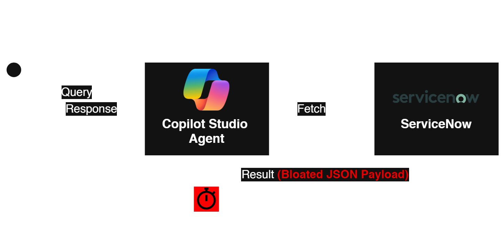
The Solution, The Process
A dual-layer architecture combining a deterministic Security Policy Gateway and a high-performance middleware proxy. This setup brokers requests between Copilot AI Agents and our ServiceNow instance. The Security Gateway acts as a strict bouncer—classifying and sanitizing user intent—while the proxy decoupling resolves latency issues and protects IT operations from API exhaustion.
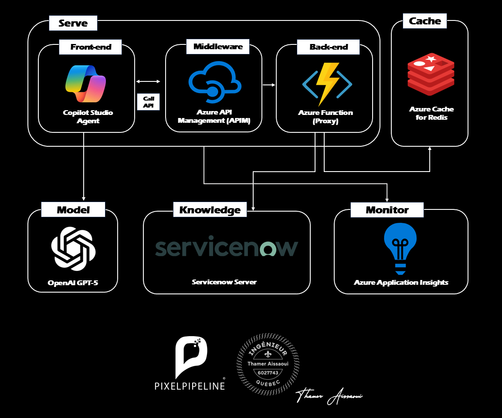
The Results, The Business Value
The implementation of this proxy layer delivered immediate, transformative improvements to the AI agent's responsiveness, security posture, and overall system maintainability.
- Unprecedented Speed: User waiting times shrank dramatically from over 2 minutes down to just 58ms (on cache miss), and effectively 0ms (instantaneous) on Redis cache hits.
- Zero-Trust Security Enforcement: All requests are classified and sanitized before execution, blocking injections and redacting sensitive data deterministically without relying on the LLM's own self-policing.
- Architectural Decoupling: A true, scalable architecture cleanly separates the AI presentation layer from the system of record, protecting backend resources from API exhaustion.
- Operational Excellence: The modular, N-tier design ensures easy debugging, streamlined maintenance, and robust governance.
- Client Satisfaction: The fluid, instantaneous AI experience has led to high user adoption, restored trust in the platform, and a highly satisfied client.
Video Demonstration
The Architecture: Intelligent Proxy & Caching
A proxy intercepting and optimizing requests between Copilot and ServiceNow.
Intelligent Serving Layer
Azure Functions backend for secure, serverless brokering and fast API orchestration.
Durable State & Caching
Azure Managed Redis for transient state coordination and sub-60ms delivery.
Agentic Orchestration
Copilot AI Agents query the proxy to fetch data without straining core systems.
Integration Model
Optimized REST APIs filter and serialize only essential fields, minimizing network I/O.
Monitoring & Governance
Resilient lazy-loading patterns handle dependency failures and ensure uptime.
The Engineering
Architectural Pattern: Layered Architecture (N-tier)
The Layered Architecture (N-tier) pattern cleanly separates application concerns:
- Client Layer: Copilot AI Agent handles interactions and sends queries.
- Proxy Layer: Azure Functions manages requests, filters payloads, and orchestrates APIs.
- Caching Layer: Azure Managed Redis intercepts requests to reduce latency.
- Data Layer: ServiceNow acts as the definitive source of truth for cache misses.
Operational workflow stages:
- Initialize: Agent queries the
snow_proxyendpoint. - Intercept: Proxy checks the
pixelpipeline-redisinstance. - Serve (Hit): Cached data (<60ms) is returned directly.
- Fetch (Miss): Proxy forwards an optimized
GETto ServiceNow. - Store & Return: Response is cached (60s TTL) and delivered to the agent.
Functional Requirements
- Request Brokering: Intercept Copilot AI Agent queries to ServiceNow.
- Payload Optimization: Filter and serialize essential fields to minimize network I/O.
- In-Memory Caching: Use Redis to instantly serve identical queries.
- Dynamic Fallback: Gracefully bypass cache if Redis is unavailable.
Non-Functional Requirements
- Performance: Sub-60ms latency via Azure Managed Redis.
- Reliability: High availability via serverless lazy-loading patterns.
- Security: Strict endpoint validation and URL-encoded connections.
- Scalability: Absorb traffic spikes without hitting ServiceNow rate limits.
- Maintainability: Clean modularity through N-tier architecture.
This point refers to how the proxy ensures it never goes down, even if one of its dependencies fails. Here is a breakdown of what that means in this specific project:
Serverless: Because the proxy is built on Azure Functions, it doesn't rely on a single, fragile server. The cloud provider automatically provisions resources and spins up new instances to handle traffic as it comes in. If a piece of hardware fails in the Azure data center, our app automatically shifts to healthy hardware without you doing anything.
"Lazy-Loading Patterns" Normally, when an application starts up, it immediately tries to connect to all its databases and caches (like Redis) globally at the very top of the script. If Redis is down for maintenance or network issues, the entire application will instantly crash on startup, causing a complete outage.
"Lazy-loading" means we delay that connection. The proxy only attempts to import and connect to Redis at the exact moment a request comes in.
Why this creates "High Availability" (Reliability): Because we lazy-load the Redis connection inside a try/except block, if Redis is completely down, the Azure Function does not crash. Instead, it gracefully catches the error, skips the cache, and forwards the query directly to ServiceNow.
This means that even in a worst-case scenario where our cache layer fails, the AI Agent keeps working seamlessly with zero downtime (it just runs at normal speed instead of cached speed).
Key Technical Optimizations
1. Payload Filtering: Forces serialization of essential fields via
sysparm_fields, shrinking payloads from 200KB to 2KB.
params = {
"sysparm_limit": "50",
"sysparm_fields": "number,short_description,priority,incident_state,sys_updated_on",
"sysparm_display_value": "true"
}2. Resilient Lazy-Loading: The redis library initializes lazily to
prevent startup crashes. If Redis fails, it gracefully degrades to a direct proxy.
3. URI Encoding: Special characters in the access key are explicitly URL-encoded
(e.g., %3D) to ensure stable Azure Managed Redis connections.
Architecture Diagram
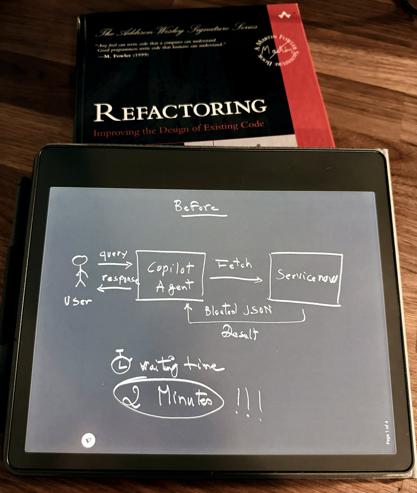
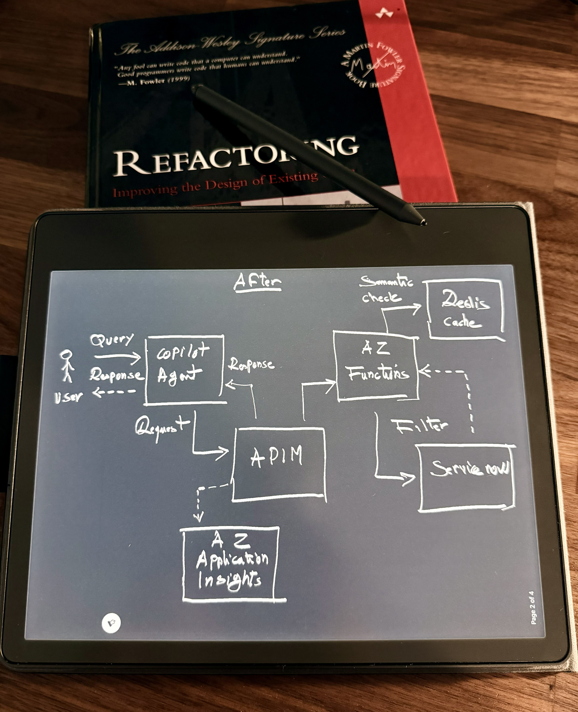
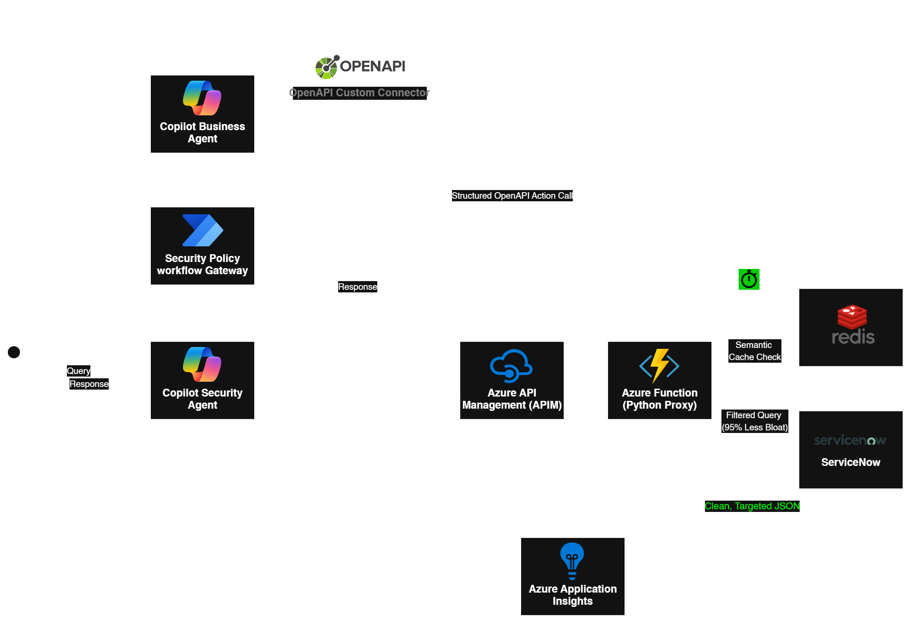
- The Decoupling: The Copilot Studio Agent is strictly a presentation layer. It handles the chat, but nothing else.
- The Governance (The Bouncer): APIM is standing right at the front door, protecting our compute layer and the client's budget.
- The Intelligence (The Brains): The Azure Function is clearly the orchestrator, making the smart routing decisions to that 50ms fast path.
- The Observability (The Daylight): Application Insights is sweeping up every trace, proving that this is a fully governed, enterprise-ready system, not a black-box AI toy.
- The security (The Gateway): No untrusted request reaches the Business Agent before passing through security policy enforcement.
Agent Security Policy Gateway
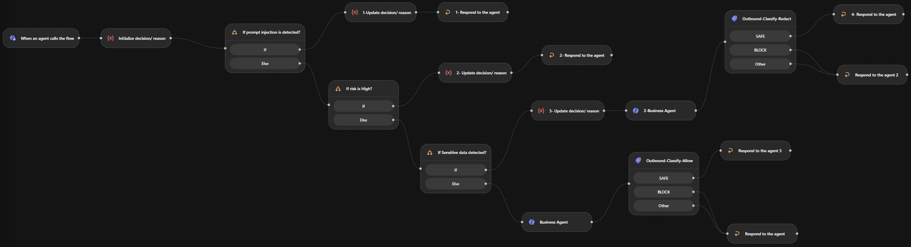
Component Diagram
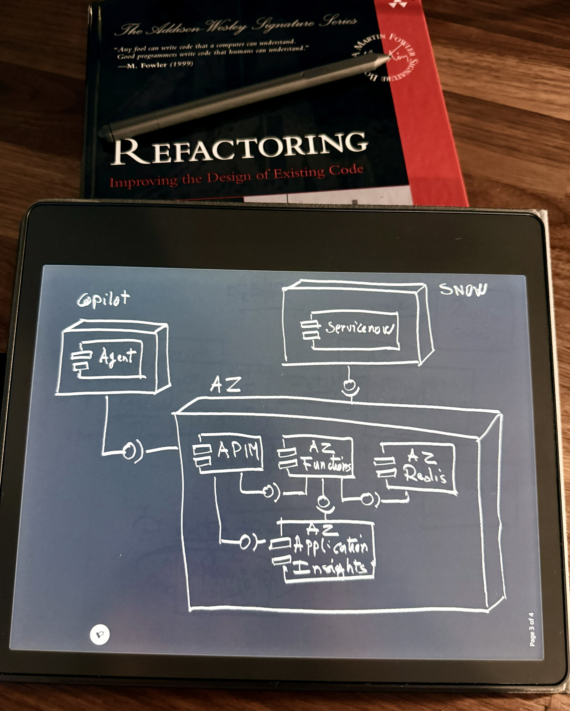
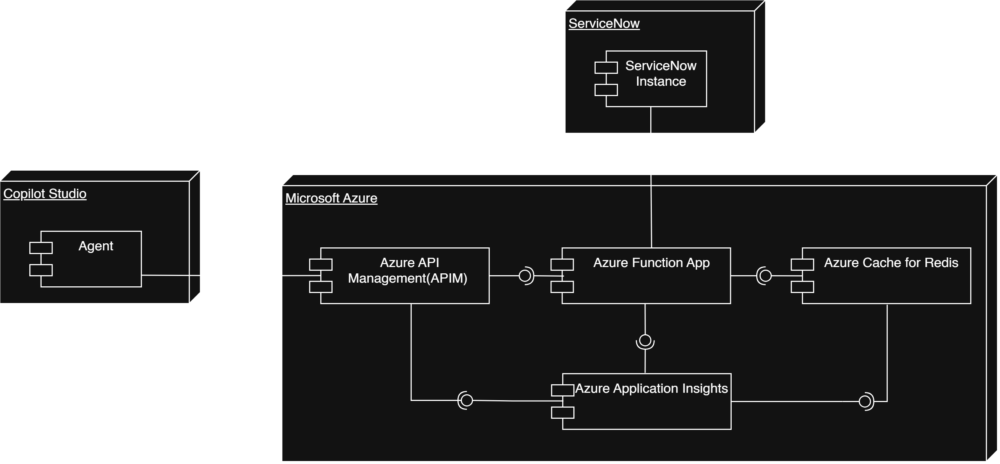
Sequence Diagram
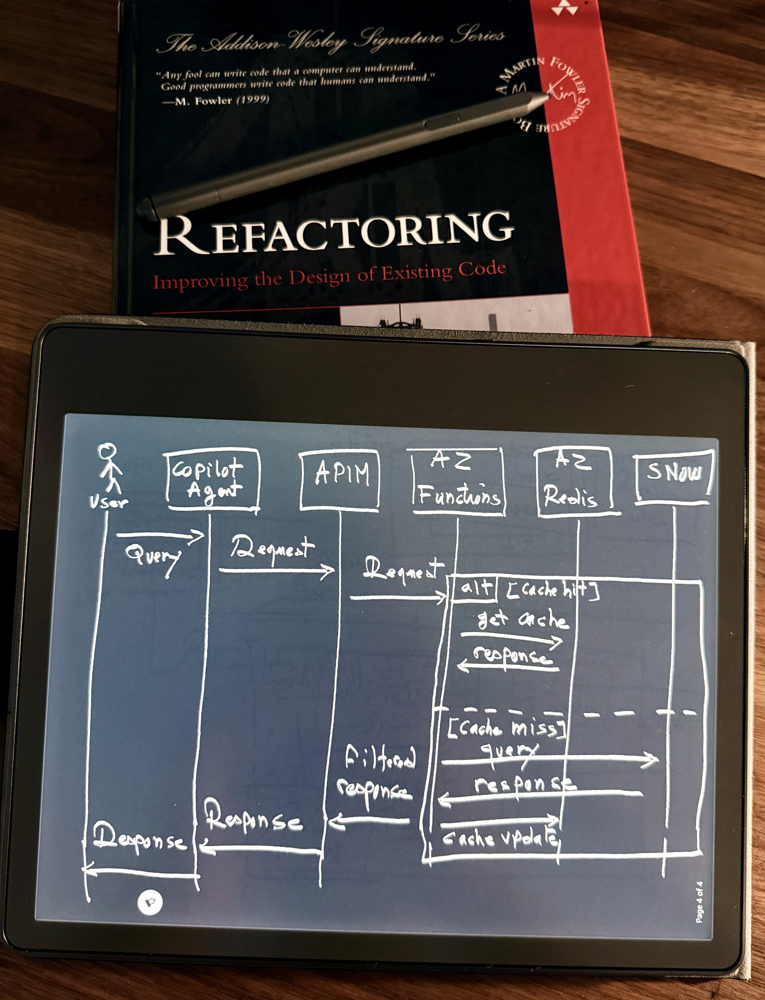
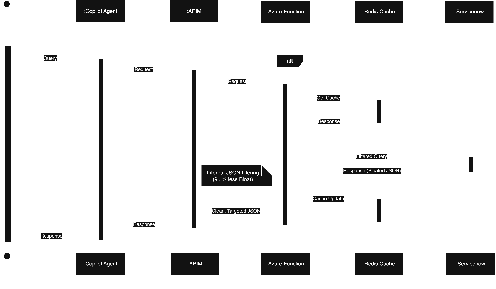
Agent Security Gateway
Overview & Security Model
The Agent Security Gateway is a security and governance layer placed between users and enterprise AI agents. Its purpose is to ensure that untrusted user requests are classified, sanitized, and policy-checked before they can reach a downstream Business Agent or enterprise data source.
Inbound Policy
- Malicious user input reaching the Business Agent
- Unnecessary PII being forwarded downstream
- Risky/injection requests invoking the Business Agent at all
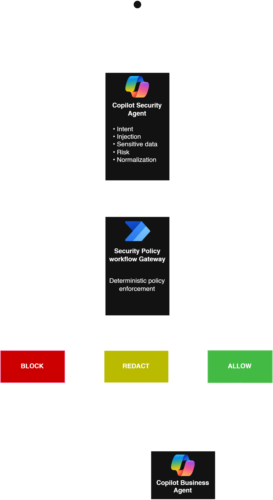
The solution follows a simple principle: No untrusted request reaches the Business Agent before passing through security policy enforcement.
The Security Agent performs semantic security analysis and produces structured metadata. The Policy Gateway workflow then applies deterministic controls:
| Condition | Decision | Behaviour |
|---|---|---|
| Prompt injection detected | BLOCK | Terminate request |
| High-risk request | BLOCK | Terminate request |
| Sensitive data detected | REDACT | Forward sanitized request |
| Normal request | ALLOW | Forward normalized request |
Only ALLOW and REDACT paths can invoke the Business Agent.
Trust Boundaries
The Security Agent does not access enterprise data. The Business Agent receives only the normalized/sanitized request, not the original user prompt or unnecessary conversation context. Retrieved enterprise content must also be treated as data rather than instructions, reducing the risk of indirect prompt injection.
Validated Scenarios & Regression Suite
The architecture is source-independent and rigorously validates the following scenarios, proving that security decisions control execution, rather than merely instructing the downstream LLM to behave securely.
| Test | Detection | Decision | Business Agent |
|---|---|---|---|
| Normal knowledge request | None | ALLOW | Called |
| Request containing unnecessary PII | Sensitive data | REDACT | Called with sanitized request |
| Prompt override / system prompt extraction | Injection | BLOCK | Not called |
| Fake administrator + emergency bypass | Privilege escalation / injection | BLOCK | Not called |
Outbound Policy
- Business Agent accidentally returning sensitive data
- Downstream source content containing prompt-injection text
- Overly broad enterprise data being returned
- Secrets, internal instructions, or unauthorized fields appearing in the response
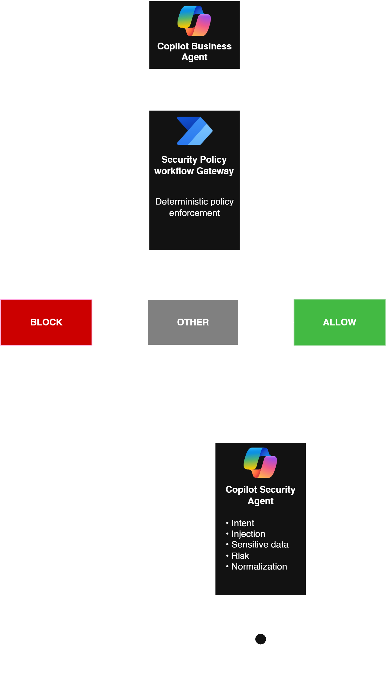
To enforce this, the Business Agent's response is treated as untrusted data and must pass an outbound classification node before reaching the user:
| Condition | Decision | Behaviour |
|---|---|---|
| Restricted Content | BLOCK | Secrets, internal instructions, or prompt leakages are blocked. A generic security message is returned instead. |
| Unknown Content | OTHER | Any ambiguous response fails safely and is blocked, implementing strict fail-closed behavior. |
| Normal Content | SAFE | Approved business information is returned directly. |